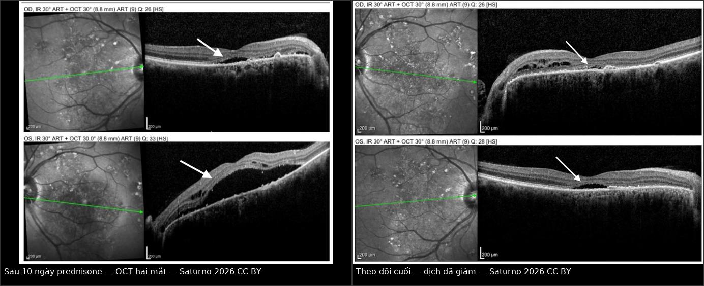
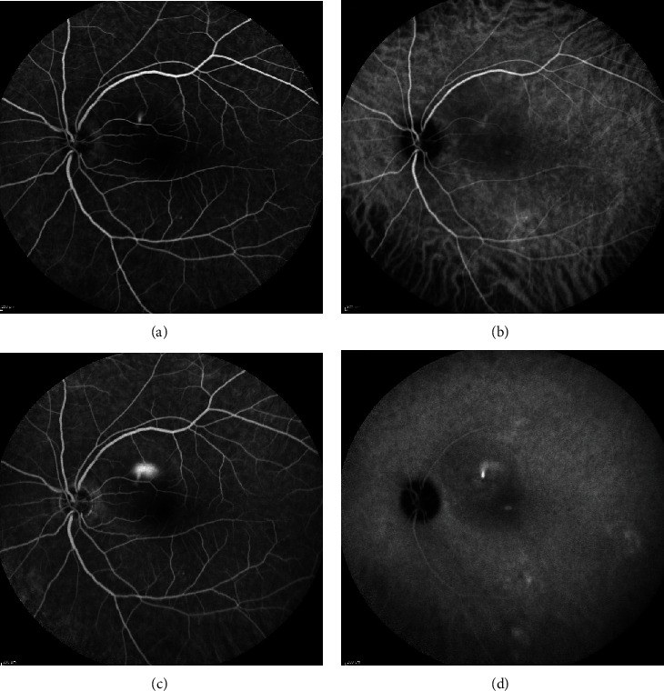
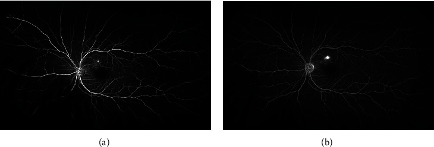
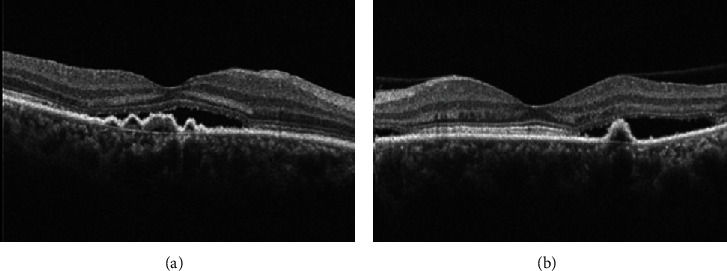
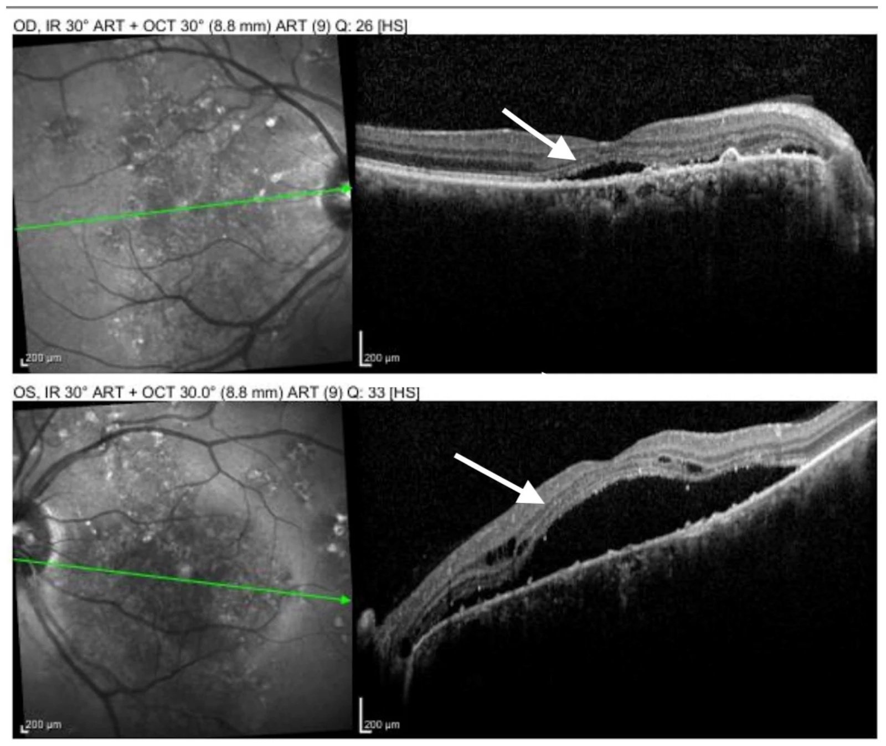
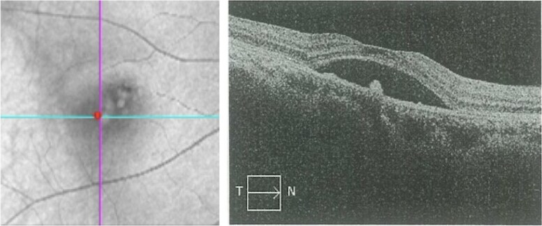
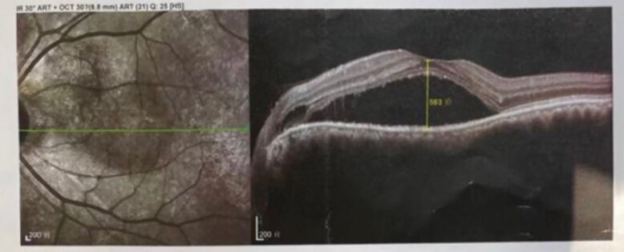
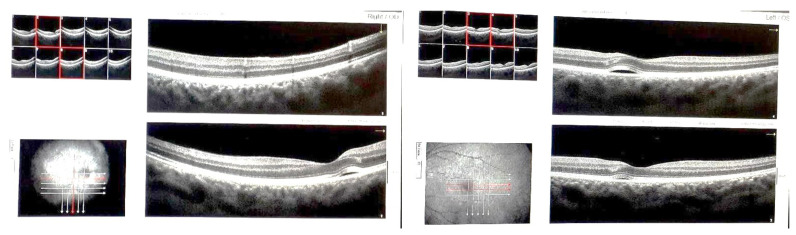

470 — Bệnh võng mạc trung tâm thanh dịch do corticosteroid & tiếp cận mất thị lực KHÔNG đau / Corticosteroid-induced central serous chorioretinopathy & painless vision loss
Tags: pattern:bong-thanh-dich vung:hoang-diem vung:hac-mac score:CSCR-chronicity protocol:OCT-EDI protocol:FA-ICGA incidentaloma:mat-do-thuoc
Mức chắc chắn (certainty): tổng hợp y văn (literature synthesis) — tổng hợp từ review + ca nguyên văn có ảnh CC BY (ghi PMCID từng ảnh), đối chiếu với các bài 444/445/435 trong repo; chưa gắn một ca nguyên văn duy nhất của nhóm.
1. Tổng quan — vì sao corticosteroid tạo ra một "bong võng mạc" mà không có rách
- Bệnh học (pathology): bệnh võng mạc trung tâm thanh dịch (central serous chorioretinopathy — CSCR) nằm trong phổ bệnh hắc mạc dày (pachychoroid disease spectrum): hắc mạc dày, mạch hắc mạc giãn và tăng thấm, rồi biểu mô sắc tố võng mạc (retinal pigment epithelium — RPE) mất chức năng bơm → dịch tích tụ giữa võng mạc thần kinh cảm giác và RPE. Đây là bong thanh dịch (serous detachment), không phải bong do rách (rhegmatogenous).
- TẠI SAO hình ảnh như vậy (cơ chế vật lý):
- OCT: dịch dưới võng mạc là nước → khoang giảm phản xạ (hyporeflective) hình vòm giữa võng mạc thần kinh cảm giác và dải RPE. Võng mạc ngoài mất bám dính → các đoạn ngoài tế bào cảm thụ sáng dựng đứng, "xù xì" (shaggy photoreceptors); mạn tính → teo võng mạc ngoài, mỏng điểm hoàng điểm. EDI-OCT (enhanced depth imaging) thấy hắc mạc dày, mạch hắc mạc lớn (pachyvessels).
- FA (fluorescein angiography): thuốc huỳnh quang rò qua vùng RPE khiếm khuyết → điểm rò tăng huỳnh quang; lan dần trong khoang dưới võng mạc. Kiểu "vệt mực loang" (inkblot) là dạng thường gặp; kiểu "đuôi khói" (smokestack) chỉ 10–20% ca, do dòng đối lưu của dịch giàu protein bốc lên rồi tỏa hình nấm.
- ICGA (indocyanine green angiography): thấy tăng thấm hắc mạc (hyperpermeability) và mạch hắc mạc giãn — đối lập với giảm tưới máu hắc mạc (hypoperfusion) của bệnh viêm hắc mạc mao mạch nguyên phát (primary inflammatory choriocapillaropathy — PICCP).
- FAF (fundus autofluorescence): cấp — giảm huỳnh quang do dịch che lấp; mạn — lốm đốm, có "rãnh thoát dịch" (guttering/descending tracts) do RPE tổn thương dọc đường dịch chảy.
- Vì sao corticosteroid là nguyên nhân hàng đầu: glucocorticoid hoạt hóa thụ thể mineralocorticoid ở mạch hắc mạc → giãn mạch, tăng thấm; đồng thời làm rối loạn vận chuyển ion và điện thế của RPE → giảm tái hấp thu dịch dưới võng mạc. Corticosteroid còn làm tăng nhạy cảm với catecholamine và thay đổi huyết động học. Hệ quả lâm sàng: thể do thuốc ít nam hóa hơn thể vô căn, hay hai bên và không điển hình hơn.
- Đường dùng đều có thể gây: uống, tiêm tĩnh mạch, tiêm quanh nhãn cầu, nhỏ mắt, tiêm khớp, bôi da; cả tăng cortisol nội sinh (hội chứng Cushing) và thai kỳ — phân tích gộp 4 nghiên cứu (2.766 người) cho OR 5,51 (KTC 95% 2,12–14,30) cho thai kỳ như yếu tố nguy cơ CSCR.
- Ngưỡng định lượng nằm lòng:
- Tần suất: đỉnh ~70/100.000 người–năm ở nhóm 40–49 tuổi; nam gặp nhiều hơn ở thể vô căn.
- Diễn tiến tự nhiên: 84% ca cấp khỏi trong 6 tháng trong một cohort tiến cứu (31 mắt); một cohort 140 mắt theo dõi trung bình 98,9 tháng cho thấy 62,1% khỏi trong 6 tháng nhưng 55,7% tái phát, trung bình 25,7 tháng sau khi khỏi.
- Yếu tố kéo dài đợt cấp (độc lập): bề dày hắc mạc dưới hoàng điểm (SFCT) ≥ 500 μm, RPE nhô ≥ 50 μm tại điểm rò, tuổi ≥ 40.
- Thể do corticosteroid trong viêm màng bồ đào: series 14 bệnh nhân/20 mắt — 78,6% nam, prednisone uống 5–80 mg/ngày, 85% có rò điểm trên FA; series 26 bệnh nhân/31 mắt — 88,4% nam, tuổi trung bình 42,8, hai bên 19,2%, 88,5% đang dùng corticosteroid toàn thân, thời gian khỏi trung bình 99 ± 61 ngày, 29% cần laser điểm.
- Phản biện quan trọng (fidelity + critique): nguy cơ CSCR rất rõ với corticosteroid toàn thân/quanh nhãn cầu/nhỏ mắt, nhưng tiêm corticosteroid nội dịch kính có dữ liệu ngược lại: cohort 2.336 bệnh nhân trong 21 năm không có ca CSCR nào (KTC 95% 0–0,13%), và bề dày hắc mạc giảm nhẹ sau 1 tháng (dexamethasone implant 227,0 → 217,9 μm; triamcinolone 219,8 → 218,6 μm). Không được suy diễn nguy cơ toàn thân sang mọi đường tiêm nội nhãn — nhưng vẫn phải cảnh giác ở ca lâm sàng đơn lẻ.
2. Mẫu hình + chẩn đoán phân biệt theo kiểu khởi phát (gamut)
Mất thị lực KHÔNG đau không phải một bệnh — đó là một "cửa vào". Ba câu hỏi chia gamut:
- Khởi phát nhanh cỡ nào? Giây–phút (mạch máu, bong võng mạc, xuất huyết) vs giờ–ngày (viêm, CSCR, thần kinh thị).
- Mất trung tâm hay mất vùng? Trung tâm/ám điểm + biến dạng hình (metamorphopsia) → hoàng điểm; mất nửa trên/dưới → thần kinh thị hoặc nhánh mạch.
- Đáy mắt có tổn thương nhìn thấy không? Có (trắng nhợt, xuất huyết, bong, phù đĩa) vs đáy mắt bình thường (thần kinh thị sau nhãn cầu, bệnh đường thị giác, bệnh võng mạc chưa thấy).
Nhóm A — đột ngột, không đau, đáy mắt BẤT THƯỜNG:
- Tắc động mạch trung tâm võng mạc (CRAO): võng mạc trắng nhợt + chấm đỏ anh đào (cherry-red spot); giờ vàng < 4–6 giờ (bài 444).
- Tắc tĩnh mạch trung tâm võng mạc (CRVO): "blood-and-thunder", tĩnh mạch giãn ngoằn ngoèo; nguy cơ glaucoma tân mạch ~90–100 ngày (bài 444).
- Bong võng mạc do rách (rhegmatogenous retinal detachment — RRD): chớp sáng, ruồi bay, màn che từ ngoại vi; macula-on → mổ trong 24 giờ, macula-off → trong 1 tuần (bài 445).
- Xuất huyết dịch kính: mất thị lực đột ngột, không thấy đáy mắt → siêu âm B-scan tìm bong/rach; ở người đái tháo đường nghĩ tân mạch.
- Xuất huyết dưới võng mạc do AMD tân mạch: người > 50, biến dạng hình rồi mất thị lực nhanh; OCT/OCTA tìm màng tân mạch.
Nhóm B — bán cấp, không đau, tổn thương HOÀNG ĐIỂM:
- CSCR (bài này): 20–50 tuổi, nam nhiều hơn, nhìn mờ nhẹ + ám điểm trung tâm + biến dạng hình + thị lực gần như bình thường (thường 20/20–20/40), khúc xạ dịch về phía viễn thị; đáy mắt có vùng nhạt màu hình vòm.
- Thoái hóa hoàng điểm do tuổi (AMD) / tân mạch hắc mạc (CNV): drusen, xuất huyết, dịch; OCT thấy dịch dưới RPE/dưới võng mạc, OCTA thấy mạng tân mạch.
- Phù hoàng điểm do đái tháo đường (DME): phù dạng nang, dày võng mạc, xuất huyết/vi phình mạch.
- Lỗ hoàng điểm (macular hole): ám điểm trung tâm + biến dạng hình; OCT thấy khuyết toàn bộ võng mạc tại hõm trung tâm.
- Nếp gấp hắc mạc – võng mạc, nang hắc mạc, u hắc mạc: OCT + siêu âm B-scan.
Nhóm C — không đau, đáy mắt BÌNH THƯỜNG hoặc phù đĩa:
- Bệnh thần kinh thị thiếu máu không do viêm mạch (NAION): > 50 tuổi, mất thị trường kiểu độ cao (altitudinal), đĩa sung huyết; mắt đối diện 15–24% trong 5 năm (bài 435).
- Bệnh thần kinh thị do viêm (optic neuritis): thường đau khi đảo mắt, trẻ; nếu không đau vẫn phải loại trừ.
- Bệnh thần kinh thị di truyền Leber (LHON): nam trẻ, mất thị lực trung tâm hai mắt tuần tự.
- Bệnh đường thị giác/chẩm (occipital): mất thị trường đối bên, MRI não.
Gợi nhớ CSCR do thuốc — "STEROID": Steroid (mọi đường) · Time (vài ngày–vài tuần sau khi bắt đầu/tăng liều) · Extra (hay hai bên, không điển hình) · RPE leak (rò điểm trên FA) · OCT dome (bong hình vòm) · Inkblot/smokestack · Discontinue (giảm/ngừng corticosteroid là điều trị chính).
3. Bảng so sánh phân biệt (ma trận đối chiếu)
| Thực thể (entity) | Hình ảnh điển hình (OCT/FA/ICGA) | Chốt vào (rule-in) | Chốt loại (rule-out) | Gợi ý xác nhận |
|---|---|---|---|---|
| CSCR do corticosteroid | OCT: bong vòm thanh dịch, hắc mạc dày trên EDI, có thể PED; FA: rò điểm inkblot (đa số) hoặc smokestack 10–20%; ICGA: tăng thấm hắc mạc | Tiền sử corticosteroid (mọi đường) + bong vòm + rò điểm + hắc mạc dày, thường cải thiện khi giảm/ngừng thuốc | Rách võng mạc + dịch di chuyển theo tư thế → RRD; FA giảm huỳnh quang sớm + ICGA giảm tưới máu → PICCP; màng tân mạch trên OCTA → CNV | Soi đáy mắt + SD-OCT/EDI; FA ± ICGA; rà soát toàn bộ thuốc; cortisol/ACTH nếu nghi Cushing |
| CNV thứ phát sau CSCR mạn | Dịch dưới RPE/võng mạc, màng tân mạch trên OCTA, xuất huyết; FA rò lan tỏa không khu trú | CSCR mạn > 3 tháng + dịch tái phát + OCTA thấy mạng tân mạch | OCTA không thấy mạng tân mạch + FA chỉ rò điểm đơn thuần → CSCR không biến chứng | OCTA (en face), FA/ICGA; anti-VEGF nếu xác nhận |
| PICCP/viêm hắc mạc mao mạch (ampiginous, APMPPE, serpiginous) | OCT: tổn thương võng mạc ngoài/RPE, có thể bong; FA giảm huỳnh quang sớm rồi nhuộm muộn; ICGA giảm tưới máu kéo dài | Tổn thương dạng mảng (placoid) + ICGA giảm tưới máu + không liên quan corticosteroid | ICGA tăng thấm + rò điểm + hắc mạc dày → CSCR | ICGA là chốt; hỏi đáp ứng corticosteroid; theo dõi tổn thương mới |
| Bệnh Vogt–Koyanagi–Harada (VKH) | Bong thanh dịch hai bên lan rộng, phù đĩa, FA nhiều điểm rò nhỏ + pooling, ICGA viêm mô đệm lan tỏa | Bong hai bên + viêm màng bồ đào trước + dấu hiệu hệ thống (da/tóc/tai) | Rò điểm đơn độc + ICGA không viêm mô đệm + không dấu hệ thống → CSCR | Khám mắt toàn diện, FA/ICGA, hỏi triệu chứng thần kinh–da–tai |
| NAION | Đĩa sung huyết, phù một phần, xuất huyết quanh đĩa; OCT võng mạc không có dịch dưới võng mạc | > 50 tuổi + mất thị trường độ cao + đĩa phù + không đau | OCT có bong vòm hoàng điểm → CSCR/CNV, không phải NAION | Soi đáy mắt, thị trường, OCT đĩa; ESR/CRP nếu nghi GCA (bài 435) |
| Ngộ độc hydroxychloroquine (HCQ) | Tổn thương võng mạc ngoài quanh hoàng điểm, OCT có "mũi tên" tổn thương RPE; dịch dưới võng mạc thoáng qua có thể gặp | Dùng HCQ lâu năm + tổn thương đối xứng quanh hoàng điểm + ngừng thuốc không hết | Dịch dưới võng mạc thoáng qua, hết sau giảm corticosteroid → CSCR đã khỏi, không phải HCQ | So sánh OCT cũ, FAF, thị trường 10–2; xem bài 440 |

Trái: SD-OCT hai mắt sau 10 ngày prednisone 1 mg/kg/ngày — bong vòm võng mạc thần kinh cảm giác (mũi tên). Phải: theo dõi cuối — dịch đã giảm rõ. Nguồn: Saturno MC et al., Diagnostics 2026 (PMC13512710), Fig. 3–4, CC BY 4.0; ảnh ghép letterbox giữ nguyên tỷ lệ.Dấu hiệu chốt cần đọc đúng trên từng kỹ thuật
- OCT là chốt chẩn đoán bong thanh dịch, nhưng phải đo: chiều cao dịch dưới võng mạc (μm), có PED không, võng mạc ngoài còn nguyên không, SFCT bao nhiêu. Trong ca nguồn, chiều cao dịch 436 μm kèm PED; ca khác 186 μm trước và tăng rõ sau tiêm triamcinolone.
- FA phân biệt "rò" với "thiếu máu": CSCR rò tăng huỳnh quang; PICCP giảm huỳnh quang sớm do giảm tưới máu hắc mạc.
- ICGA là trọng tài khi OCT chỉ nói "có dịch": tăng thấm (CSCR) vs giảm tưới máu (viêm).
- OCTA để tìm CNV ở CSCR mạn — đây là biến chứng đổi hoàn toàn điều trị (anti-VEGF thay vì chỉ theo dõi/PDT).
4. Protocol chụp + thuật toán điều trị
- Protocol hình ảnh tối thiểu:
- SD-OCT hoàng điểm hai mắt (máy có EDI): đo chiều cao dịch, PED, độ nguyên vẹn võng mạc ngoài, SFCT.
- FA (nếu không có chống chỉ định): tìm điểm rò, kiểu inkblot/smokestack, loại trừ CNV.
- ICGA khi nghi viêm hắc mạc mao mạch hoặc cần phân biệt tăng thấm vs giảm tưới máu.
- OCTA khi CSCR mạn/tái phát để tìm CNV.
- FAF khi nghi tổn thương RPE mạn/guttering.
- Đánh giá nguyên nhân: rà soát toàn bộ thuốc (uống, nhỏ mắt, tiêm khớp, bôi da, xịt mũi), hỏi thuốc nam hóa/testosterone, thai kỳ, cường cortisol (béo trung tâm, tăng huyết áp, đường huyết, rậm lông). Nếu nghi Cushing nội sinh → cortisol tự do nước tiểu 24 giờ / test ức chế dexamethasone / CT thượng thận.
- Nguyên tắc điều trị:
- CSCR cấp do corticosteroid: giảm/ngừng thuốc là điều trị chính — phối hợp với bác sĩ kê đơn (thấp khớp, thận, hô hấp, ghép) để không bùng phát bệnh nền. Trong ca nguồn, prednisone được giảm ngay, thêm mycophenolate mofetil 2 g/ngày để kiểm soát viêm nền.
- Theo dõi quan sát nếu triệu chứng nhẹ, dịch ít, < 3 tháng: khám lại 4–6 tuần; giải thích 55,7% tái phát về lâu dài.
- Chỉ định can thiệp khi dịch kéo dài > 3 tháng, tái phát gây suy giảm thị lực, hoặc có CNV:
- Quang động trị liệu bán liều/bán năng lượng (half-dose/half-fluence PDT) là lựa chọn hàng đầu cho CSCR mạn — trong thử nghiệm SPECTRA, 90% (36/40) nhóm eplerenone phải chuyển sang PDT sau 3 tháng vì dịch dai dẳng, so với 20% (8/40) ở nhóm PDT; sau 24 tháng, dịch hết 80% (32/40) vs 88% (35/40), p = 0,609.
- Chất đối kháng thụ thể mineralocorticoid: eplerenone 25 mg/ngày × 1 tuần → 50 mg/ngày × 1–3 tháng, hoặc spironolactone 50 mg/ngày; canrenone 100 mg/ngày đã dùng trong ca nguồn. Theo dõi K⁺ và chức năng thận. Bằng chứng yếu hơn PDT — không dùng thay PDT ở thể mạn có chỉ định.
- Laser điểm (focal laser) cho rò ngoài hoàng điểm; anti-VEGF nếu có CNV.
- Thai kỳ: ưu tiên theo dõi/giảm corticosteroid; tránh PDT và kháng thụ thể mineralocorticoid; phối hợp sản khoa.
- Sơ đồ tiếp cận mất thị lực không đau + CSCR:
flowchart TD
A[Mất thị lực KHÔNG đau] --> B{Khởi phát giây-phút?}
B -->|Có| C[Soi đáy mắt ngay + OCT/FA khẩn]
C --> D{Võng mạc trắng + cherry-red?}
D -->|Có| E[CRAO: giờ vàng < 4-6 giờ]
D -->|Không| F{Xuất huyết/màn che/đáy mắt không thấy?}
F -->|Có| G[CRVO / xuất huyết dịch kính / RRD: B-scan + mổ cấp theo bài 444-445]
F -->|Không| H[OCT hoàng điểm]
B -->|Không: giờ-ngày| H
H --> I{Có bong vòm thanh dịch?}
I -->|Không| J[Loại trừ NAION/LHON/đường thị giác: thị trường + MRI]
I -->|Có| K{Có tiền sử corticosteroid?}
K -->|Có| L[CSCR do corticosteroid: ngừng/giảm thuốc + theo dõi 4-6 tuần]
K -->|Không| M[FA + ICGA + OCTA]
M --> N{ICGA tăng thấm + rò điểm?}
N -->|Có| L
N -->|Không: ICGA giảm tưới máu| O[PICCP/viêm: điều trị viêm, KHÔNG tăng corticosteroid mù]
L --> P{Dịch > 3 tháng hoặc tái phát/CNV?}
P -->|Không| Q[Theo dõi + giải thích tái phát 55,7%]
P -->|Có| R[Half-dose PDT; MR antagonist; laser điểm/anti-VEGF nếu CNV]

Bốn thì FA/ICGA: (a, b) sớm — điểm rò; (c, d) muộn — cột huỳnh quang bốc lên và tỏa hình nấm. Kiểu này chỉ gặp 10–20% ca CSCR cấp. Nguồn: Iyer PG et al., Case Rep Ophthalmol Med 2020 (PMC7443246), Fig. 2, CC BY 4.0.
FA thì sớm (a) và muộn (b): điểm rò tăng huỳnh quang lan rộng dần tại chỗ (inkblot). Đây là kiểu thường gặp nhất; smokestack chỉ 10–20%. Nguồn: Iyer PG et al., PMC7443246, Fig. 1, CC BY 4.0.5. Biến thể bình thường và cạm bẫy
- Cạm bẫy số 1 — "dịch mới = bệnh viêm bùng phát": ở bệnh nhân viêm màng bồ đào đang dùng corticosteroid, dịch dưới võng mạc mới xuất hiện có thể là CSCR do thuốc, không phải viêm tiến triển. Tăng corticosteroid sẽ làm CSCR nặng thêm — đây là lỗi iatrogenic đã được báo cáo.
- CSCR do thuốc không điển hình: ít nam hóa hơn, hai bên và bong lan rộng hơn thể vô căn; đừng vì "không đúng nam trẻ" mà loại trừ.
- FA/ICG bình thường không loại trừ CSCR: đã có ca CSCR có dịch trong võng mạc (IRF) với FA và ICG bình thường; chẩn đoán dựa vào OCT + bối cảnh.
- CSCR đã khỏi giả HCQ: tổn thương võng mạc ngoài quanh hoàng điểm sau CSCR thoáng qua có thể bị đọc nhầm là ngộ độc hydroxychloroquine; so OCT cũ + hỏi đợt corticosteroid + theo dõi sau ngừng thuốc.
- Tiêm nội dịch kính không giống đường toàn thân: cohort 2.336 bệnh nhân không có CSCR, hắc mạc còn mỏng đi; đừng quy mọi dịch sau tiêm nội nhãn cho corticosteroid mà bỏ qua nguyên nhân khác (bong dịch kính sau, CNV, phù do bệnh nền).
- "Không đau" không có nghĩa "lành": CRAO (< 4–6 giờ), RRD macula-on (24 giờ), GCA/AAION (mắt kia có thể mất trong 1 tuần) là các cấp cứu trong cùng gamut — hỏi kỹ khởi phát và soi đáy mắt trước khi cho về.
- CSCR và thai kỳ: có thể xuất hiện trong thai kỳ do tăng cortisol; không dùng eplerenone/spironolactone/PDT; theo dõi sau sinh.
- Giảm corticosteroid quá nhanh: nguy cơ bùng phát bệnh nền (viêm màng bồ đào, bệnh mô liên kết, ghép tạng) — cần phối hợp bác sĩ điều trị, giảm theo bậc, không tự ngừng.

(a) Đoạn ngoài tế bào cảm thụ dựng đứng, xù xì khi mất bám vào RPE; (b) PED + dịch dưới võng mạc. Đây là dấu hiệu của CSCR hoạt động, không đặc hiệu nguyên nhân. Nguồn: Iyer PG et al., PMC7443246, Fig. 4, CC BY 4.0.6. Tự lượng giác — Blind Quiz
Ca 1 — Nam 48 tuổi, viêm hắc mạc mao mạch (ampiginous) đang dùng prednisone 1 mg/kg/ngày. Sau 10 ngày, nhìn mờ hai bên và nhìn màu lệch. Đọc OCT.

- Gợi ý lâm sàng: bệnh nền viêm hắc mạc; thị lực giảm nhanh sau khi bắt đầu corticosteroid liều cao; không có tổn thương placoid mới.
- Câu hỏi: Dịch nằm ở đâu? Đây là viêm tiến triển hay biến chứng thuốc? Bước tiếp theo là tăng hay giảm corticosteroid?
Bấm để hiện đáp án (findings + chẩn đoán)
- Dấu hiệu: SD-OCT hai mắt — bong vòm thanh dịch võng mạc thần kinh cảm giác (mũi tên), võng mạc ngoài còn nguyên; không có tổn thương placoid mới, không có giảm tưới máu mới trên ICGA.
- Chẩn đoán: CSCR do corticosteroid (thể hai bên) — xuất hiện sau 10 ngày prednisone 1 mg/kg/ngày, có rò điểm kiểu inkblot trên FA, ICGA tăng thấm hắc mạc chồng trên vùng giảm tưới máu cũ.
- Xử trí: giảm/ngừng prednisone (không tăng!), thêm mycophenolate mofetil 2 g/ngày để kiểm soát bệnh nền; theo dõi OCT. Trong ca nguồn, dịch gần hết sau 2 tháng, thị lực 20/25 và 20/40, rồi 20/20 và 20/22 ở lần khám cuối.
- Bài học: "dịch mới" ở bệnh nhân viêm đang dùng steroid không đồng nghĩa bùng phát viêm.
- Nguồn ảnh: Saturno MC et al., Diagnostics 2026 (PMC13512710), Fig. 3, CC BY 4.0.
Ca 2 — Nữ 39 tuổi, nhìn mờ + biến dạng hình hai mắt. Đọc OCT và cho biết nguyên nhân nội sinh hay ngoại sinh.

- Gợi ý lâm sàng: không dùng corticosteroid ngoại sinh; có bằng chứng lâm sàng và sinh hóa của tăng cortisol.
- Câu hỏi: Mô tả dịch và PED? Nếu không có thuốc, còn nguyên nhân nào? Xét nghiệm nào tiếp theo?
Bấm để hiện đáp án (findings + chẩn đoán)
- Dấu hiệu: OCT mắt phải — bong thanh dịch võng mạc thần kinh với chiều cao dịch 436 μm, kèm bong RPE (PED); mắt trái cũng có dịch.
- Chẩn đoán: CSCR do tăng cortisol nội sinh (hội chứng Cushing) — CT bụng phát hiện adenoma thượng thận phải 29 × 21 mm; sau mổ, bong thanh dịch thoái triển trong 6 tuần.
- Xét nghiệm: cortisol tự do nước tiểu 24 giờ/test ức chế dexamethasone, ACTH, CT/MRI thượng thận.
- Bài học: CSCR "vô căn" ở người có dấu hiệu Cushing phải tìm nguồn cortisol nội sinh; điều trị nguyên nhân (phẫu thuật) có thể khỏi bệnh.
- Nguồn ảnh: Pang B et al., JCEM Case Rep 2025 (PMC12445647), Fig. 1, CC BY 4.0.
Ca 3 — Nam 60 tuổi, Graves orbitopathy, đã truyền methylprednisolone 4,5 g/10 tuần; sau đó tiêm triamcinolone quanh nhãn cầu, đột ngột nhìn mờ. Đọc OCT.

- Gợi ý lâm sàng: bệnh nền tuyến giáp; nhiều đợt corticosteroid đường toàn thân và tại chỗ.
- Câu hỏi: Dịch dưới võng mạc xuất hiện sau can thiệp nào? Chẩn đoán? Hướng xử trí?
Bấm để hiện đáp án (findings + chẩn đoán)
- Dấu hiệu: OCT — bong thanh dịch võng mạc + PED nhỏ, chiều cao dịch tăng so với trước tiêm (trước 186 μm).
- Chẩn đoán: CSCR do corticosteroid sau tiêm triamcinolone quanh nhãn cầu (đường tại chỗ cũng đủ gây bệnh), trên nền đã dùng methylprednisolone tĩnh mạch.
- Xử trí: ngừng corticosteroid ngoại sinh; theo dõi; trong ca nguồn dịch và PED cải thiện sau 4 tháng ngừng thuốc, thị lực hồi phục.
- Bài học: hỏi cả đường tiêm tại chỗ — không chỉ thuốc uống.
- Nguồn ảnh: Pang B et al., PMC12445647, Fig. 4, CC BY 4.0.
Ca 4 — FA của một bệnh nhân nam trẻ, nhìn mờ một bên vài ngày, đang dùng corticoid nhỏ mắt. Đọc kiểu rò và phân biệt với viêm hắc mạc.
- Gợi ý lâm sàng: không đau, không sốt, không tiền sử viêm màng bồ đào; đang dùng corticoid nhỏ mắt. Đây là ca minh họa hình ảnh từ review, không có đầy đủ bệnh sử.
- Câu hỏi: Kiểu rò tên gì? Cơ chế? Nếu ICGA cho thấy giảm tưới máu thì chẩn đoán đổi thế nào?
Bấm để hiện đáp án (findings + chẩn đoán)
- Dấu hiệu: FA thì sớm có điểm rò, thì muộn huỳnh quang bốc thành cột rồi tỏa hình nấm = smokestack (đuôi khói) — gặp ở 10–20% CSCR cấp.
- Chẩn đoán: CSCR — trong bối cảnh đang dùng corticoid nhỏ mắt, đây là nguyên nhân cần nghĩ trước. Nếu ICGA thấy giảm tưới máu hắc mạc kéo dài thay vì tăng thấm → nghĩ PICCP/viêm hắc mạc mao mạch, không phải CSCR.
- Xử trí: ngừng corticoid nhỏ mắt; theo dõi OCT 4–6 tuần; giải thích khả năng tái phát.
- Nguồn ảnh: Iyer PG et al., Case Rep Ophthalmol Med 2020 (PMC7443246), Fig. 2, CC BY 4.0.
Ca 5 — Bệnh nhân LHON đang được điều trị corticosteroid; ngày thứ 3 thấy nhìn mờ thêm. Đọc OCT.

- Gợi ý lâm sàng: bệnh thần kinh thị di truyền; corticosteroid được dùng cho đợt cấp; thị lực không cải thiện như mong đợi.
- Câu hỏi: Dịch nằm ở đâu? Có phải bệnh thần kinh thị nặng lên? Nên tăng hay giảm corticosteroid?
Bấm để hiện đáp án (findings + chẩn đoán)
- Dấu hiệu: OCT hoàng điểm — bong thanh dịch võng mạc thần kinh, dày và tăng phản xạ lớp nhân ngoài/ellipsoid; không có bong hắc mạc.
- Chẩn đoán: CSCR do corticosteroid xuất hiện ở ngày thứ 3 điều trị — biến chứng iatrogenic, không phải LHON tiến triển.
- Xử trí: trao đổi với bác sĩ thần kinh–mắt về giảm/ngừng corticosteroid; theo dõi OCT. Không tăng liều vì "thấy mờ hơn".
- Nguồn ảnh: Zoric L et al., Medicina 2024 (PMC11766876), Fig. 2, CC BY 4.0.
Bài liên quan chéo
- 400 – Tổng quan Mắt & thị giác
- 444 – Tắc mạch võng mạc: CRVO/BRVO vs CRAO (cherry-red & giờ vàng)
- 445 – Bong võng mạc: rhegmatogenous vs co kéo vs tiết dịch
- 435 – GCA & NAION/AION: cấp cứu mù ở người > 50 tuổi
- 440 – Theo dõi & điều trị teo thị di truyền
- 464 – Viêm thần kinh thị tái phát (CRION)
- 455 – Behçet & lupus ở mắt
- 447 – Hội chứng đốm trắng (APMPPE, MEWDS, AZOOR, PIC)
Ảnh
- Tên file
470_cscr_<modality>_PMC...; nguồn + giấy phép từng ảnh trongimages/CREDITS.md. - Tất cả ảnh dùng ở đây là CC BY 4.0; ảnh ghép letterbox giữ nguyên tỷ lệ, không crop/kéo giãn.
- Không tải ảnh từ AuntMinnie/paywall; nguồn đóng chỉ dẫn link ở
sources.md.
Không dùng để chẩn đoán độc lập khi chưa có người hướng dẫn.